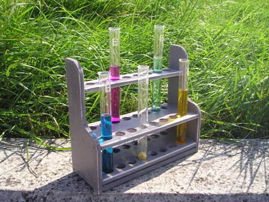
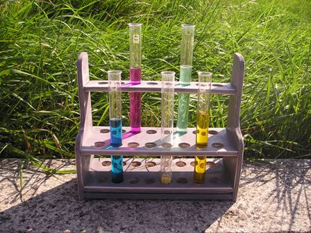

Leggendo l'interessante volume "Molecules that changed the World" di Nicolau-Montagnon, si trova ad un certo punto la storia della sintesi della canfora, effettuata dal finlandese Gustaf Komppa nel 1903.
(Faccio un inciso: quando mi imbatto nelle sintesi delle sostanze naturali eseguite nel periodo storico fine ottocento-metà novecento le trovo sempre di un ingegno che mi sbalordisce. Un solo esempio per tutte: quella della stricnina di Woodward del 1954 rasenta secondo me una delle genialità assolute dell'arte e della fantasia... ma gli esempi sono numerosissimi e uno più sconvolgente dell'altro).
A pag. 47 del libro si vede il prof. Komppa in classe, ormai famoso e ben compiaciuto, con accanto alcuni semplici strumenti, fra cui un bel portaprovette in legno, di quelli che si usavano una volta.
Perchè non farne uno simile, mi son detto, e buttare finalmente alle ortiche quell'indegno oggetto di moderna plastica che ho usato fino adesso?
Ho preso spunto da quello del buon prof. Gustaf e ne ho fatto uno simile (non uguale), di buon legno lavorato a mano e similmente verniciato.

Finalmente un portaprovette degno del nome, che sta bello dritto e stabile, non ha il tramezzo centrale sempre incurvato, non si offende se si trova ad una spanna dal bunsen ed ha una linea old style come piace a me.Ci stanno sedici provette (anche troppe!) di quelle grandi e buone, da 180x18 della Schott-Duran, in due file da otto, una fila bassa davanti ed una alta dietro, di una comodità estrema, come il sedile di una vecchia carrozza.

Per le foto ho messo qualche provetta con in ciascuna un liquido colorato per fare un po' di scena, come si usa per i liquidi "di chimica" (nei film in cui appare un laboratorio di chimica c'è sempre il pallone viola col permanganato, quello giallo col cromato e quello azzurro col solfato di rame...).
Grazie esimio prof. Komppa per la sua sintesi dell'acido canforico e, molto molto umilmente, a cent'anni e passa di distanza, per il mio nuovo portaprovette che ho fatto in suo onore.
1 commenti